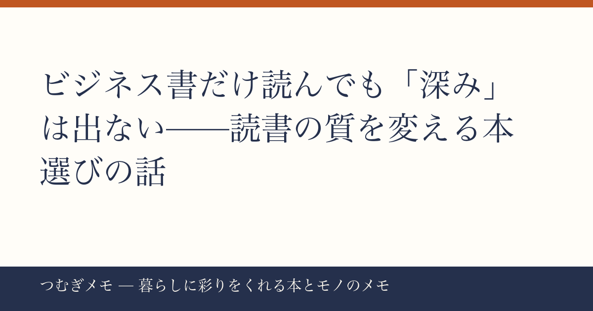

こんにちは、つむぎです。今週のXの読書クラスタを眺めていたら、ある共通のテーマが何度も何度も浮き上がってきました。この記事でわかること：「何を読むか」の選択が、仕事でも人間関係でも、じわじわと差を生む理由と、今日からできる本棚の組み替え方。
今週の要点
- 「ビジネス書だけ読んでいると人間理解が浅くなる」という主張に、今週だけで同趣旨の投稿が複数流れた
- 読書スランプを抜け出すきっかけになった一冊、旅心や感情を動かした一冊の報告が相次いだ
- 電車・通勤時間の読書が「集中しやすい」という実感のシェアも重なり、"読む環境"への関心も高まっている
---
今週のXで最も示唆に富んでいたのが、こんな趣旨の投稿だった。「ビジネス書ばかり読んでいると、正解っぽいことは言える。フレームワークも知っている。でも深みがない。人間理解が浅い。だから歴史や哲学を読んだ方がいい」——これが今週だけで複数の独立した投稿として流れ、それぞれがいいねを集めた。
なぜ今この話がこれだけ刺さるのか。ひとつには「効率・最適化」の文脈で本を選んできた層が、少しずつ壁にぶつかり始めている時期なのだと思う。20代後半から30代にかけて、ビジネス書で武装してきた人が、職場やチームの中で「なぜかうまくいかない」場面に直面する。そこで足りないのは、たいていフレームワークじゃなくて「この人はなぜこう動くのか」という想像力だ。
そしてその想像力は、小説や歴史書を読むことで静かに育つ。登場人物の矛盾した感情を追いかける経験、数百年前の政治家の判断を「なぜそうしたのか」と考える経験——これがビジネスの現場に戻ったとき、相手を読む力として機能する。
今日できること： 次に本を一冊選ぶとき、「役に立つか」ではなく「読んでいて人間が描かれているか」を基準にしてみる。歴史小説でも、古典SFでも、分類は問わない。
---
今週の読書報告の中で特に印象的だったのが、「数年に渡る読書スランプが、一冊を読み切ることで終わった」という体験談だ。辻村深月の作品を例に挙げたその投稿は、「読む前は不安だったが、気づけば夢中で読み耽っていた」と綴っていた。
読書スランプは「本が合わない」のではなく、「本と自分のコンディションが噛み合っていない」状態であることが多い。だから解決策は「もっと薄い本にする」だけではなくて、「今の自分の感情が引っかかる本に出会う」ことだったりする。
同じ週に、『さいはての彼女』（原田マハ）を「読むと旅に出たくなる、心の澱がすっと浚われる」と表現した投稿や、香月日輪『桜大の不思議の森』を「自然や不思議な力が好きならぴったり」と紹介した投稿も流れていた。いずれも「この本で感情が動いた」という一次体験の報告であり、感想の質が違う。レビューサイトの星の数ではなく、誰かの生きた言葉から本を選ぶ時代になっていることを、改めて感じた。
楽天で『さいはての彼女 原田マハ』を見る / Amazonで『さいはての彼女 原田マハ』を見る
今日できること： Xの読書タグを「#読了」で検索し、評点ではなく「一文で感情が伝わっている感想」を書いている人を一人フォローしてみる。その人の棚が、次の一冊の道標になる。
---
「電車の中が一番集中できる」という話も、今週複数の読書好きから出ていた。移動中に連日読了しているという投稿者が「電車での読書おすすめですよ」と添えた一言が、妙に多くの人の共感を引いていた。
これは直感的に理解できる。自宅はスマホを触れるし、カフェは人の声が気になる。でも電車には「物理的にできることが少ない」という制約があって、その制約がむしろ読書への没入を助ける。「やることがない時間」を積極的につくることが、読書習慣を定着させる一番の近道かもしれない。
通勤電車がない人、在宅ワークの人でも応用できる。スマホを別の部屋に置いて「本しかない環境」を10分つくるだけで、読書の入り口はかなり変わる。
ちなみに、雑誌の定期購読を使って「届いた雑誌を読む」という習慣をつくるのも、同じ「制約が集中を助ける」原理だ。(PR) Fujisan.co.jp 雑誌のオンライン書店を見るでは最大70%割引で定期購読ができるので、気になるジャンルの雑誌を一冊試してみるのもいい。
今日できること： 明日の移動中、あるいは「スマホを置いた10分間」に、読みかけの本を一ページだけ開く。ページ数の目標は立てなくていい。
---
Q. 小説や歴史書を読んでも、仕事に直接役に立たないのでは？
A. 「直接役に立つ」かどうかの判断が、少し早すぎるかもしれない。今週の投稿でも触れられていたように、ビジネスの場面で必要になる「人間理解」は、ビジネス書には書いていない。小説の登場人物を通じて「なぜ人はこう動くのか」を体験する時間は、長い目で見ると仕事の質に戻ってくる。
Q. 読書スランプのとき、どんな本から始めればいい？
A. 「今の感情に引っかかる本」が正直一番早い。旅に出たい気分なら旅の物語、誰かの人生をのぞきたい気分なら伝記や私小説。ジャンルよりも「今の気分と本の空気が合っているか」を優先してみて。今週話題になった原田マハや香月日輪の名前はひとつの参考になる。
Q. Xで読書の情報を集めるとき、どうやって質の高い感想を見つければいい？
A. 「面白かった」で終わっている感想より、「読んでいてこう感じた、だからこういう人に勧めたい」まで書いている投稿を優先してフォロー・ブクマしていくと、自分の棚が自然と豊かになっていく。今週流れていた投稿群は、まさにその質を持っていた。
---
「何を読むか」の話は、突き詰めると「どんな自分でいたいか」の話でもある。今週のXを見ていて、読書クラスタの人たちが単に「本の紹介」をしているのではなく、「一冊との出会いで何かが変わった」という体験をシェアしているのが伝わってきて、それ自体がとても豊かだと思った。
つむぎメモは現在、AIと一緒にコンテンツを組み立てる実験的な運営をしています。毎週のバズ分析から「本当に繰り返し語られているテーマ」を拾い上げる作業を一緒にやっていて、その過程でこそ見えてくるものを記事にしています。気に入っていただけたら、ブックマークしてまた戻ってきてもらえると嬉しいです。
— つむぎ (@tsumugi_memo15)
📚 目次へ